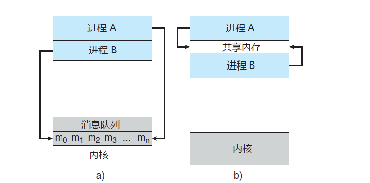

<!DOCTYPE html>
<html class="writer-html5" lang="zh-CN" >
<head>
  <meta charset="utf-8" /><meta name="generator" content="Docutils 0.17.1: http://docutils.sourceforge.net/" />

  <meta name="viewport" content="width=device-width, initial-scale=1.0" />
  <title>并发通信与channel &mdash; GolangNote v1.0 文档</title>
      <link rel="stylesheet" href="../../_static/pygments.css" type="text/css" />
      <link rel="stylesheet" href="../../_static/css/theme.css" type="text/css" />
  <!--[if lt IE 9]>
    <script src="../../_static/js/html5shiv.min.js"></script>
  <![endif]-->
  
        <script data-url_root="../../" id="documentation_options" src="../../_static/documentation_options.js"></script>
        <script src="../../_static/jquery.js"></script>
        <script src="../../_static/underscore.js"></script>
        <script src="../../_static/doctools.js"></script>
        <script src="../../_static/translations.js"></script>
    <script src="../../_static/js/theme.js"></script>
    <link rel="index" title="索引" href="../../genindex.html" />
    <link rel="search" title="搜索" href="../../search.html" />
    <link rel="next" title="select机制" href="select%E6%9C%BA%E5%88%B6.html" />
    <link rel="prev" title="并发与goroutine" href="%E5%B9%B6%E5%8F%91%E4%B8%8Egoroutine.html" /> 
</head>

<body class="wy-body-for-nav"> 
  <div class="wy-grid-for-nav">
    <nav data-toggle="wy-nav-shift" class="wy-nav-side">
      <div class="wy-side-scroll">
        <div class="wy-side-nav-search" >
            <a href="../../index.html" class="icon icon-home"> GolangNote
          </a>
<div role="search">
  <form id="rtd-search-form" class="wy-form" action="../../search.html" method="get">
    <input type="text" name="q" placeholder="在文档中搜索" />
    <input type="hidden" name="check_keywords" value="yes" />
    <input type="hidden" name="area" value="default" />
  </form>
</div>
        </div><div class="wy-menu wy-menu-vertical" data-spy="affix" role="navigation" aria-label="Navigation menu">
              <ul class="current">
<li class="toctree-l1"><a class="reference internal" href="../%E7%AC%AC1%E7%AB%A0%20Go%E5%9F%BA%E6%9C%AC%E7%B1%BB%E5%9E%8B/index.html">第1章 Go基本类型</a></li>
<li class="toctree-l1"><a class="reference internal" href="../%E7%AC%AC2%E7%AB%A0%20Go%E5%87%BD%E6%95%B0/index.html">第2章 Go函数</a></li>
<li class="toctree-l1"><a class="reference internal" href="../%E7%AC%AC3%E7%AB%A0%20Go%E6%B5%81%E7%A8%8B%E6%8E%A7%E5%88%B6/index.html">第3章 Go流程控制</a></li>
<li class="toctree-l1"><a class="reference internal" href="../%E7%AC%AC4%E7%AB%A0%20Go%E9%94%99%E8%AF%AF%E5%A4%84%E7%90%86/index.html">第4章 Go错误处理</a></li>
<li class="toctree-l1"><a class="reference internal" href="../%E7%AC%AC5%E7%AB%A0%20Go%E9%9D%A2%E5%90%91%E5%AF%B9%E8%B1%A1/index.html">第5章 Go面向对象</a></li>
<li class="toctree-l1 current"><a class="reference internal" href="index.html">第6章 Go并发编程</a><ul class="current">
<li class="toctree-l2"><a class="reference internal" href="%E5%B9%B6%E5%8F%91%E4%B8%8Egoroutine.html">并发与goroutine</a></li>
<li class="toctree-l2 current"><a class="current reference internal" href="#">并发通信与channel</a><ul>
<li class="toctree-l3"><a class="reference internal" href="#id1">并发通信模型</a><ul>
<li class="toctree-l4"><a class="reference internal" href="#id2">1. 进程的独立与协作</a></li>
<li class="toctree-l4"><a class="reference internal" href="#id3">2. 并发通信模型</a></li>
</ul>
</li>
<li class="toctree-l3"><a class="reference internal" href="#id4">channel</a><ul>
<li class="toctree-l4"><a class="reference internal" href="#id5">1. 简介</a></li>
<li class="toctree-l4"><a class="reference internal" href="#id6">2. 定义与使用</a></li>
<li class="toctree-l4"><a class="reference internal" href="#id7">3. 关闭channel</a></li>
<li class="toctree-l4"><a class="reference internal" href="#id8">3. 容量与长度</a></li>
<li class="toctree-l4"><a class="reference internal" href="#id9">4. 缓冲与非缓冲channel</a></li>
<li class="toctree-l4"><a class="reference internal" href="#id10">5. 双向与单向channel</a></li>
<li class="toctree-l4"><a class="reference internal" href="#id11">6. 遍历channel</a></li>
<li class="toctree-l4"><a class="reference internal" href="#id12">7. 使用channel实现锁</a></li>
<li class="toctree-l4"><a class="reference internal" href="#channelgoroutine">8. 使用channel实现goroutine的超时控制</a></li>
</ul>
</li>
<li class="toctree-l3"><a class="reference internal" href="#id13">注意事项</a></li>
<li class="toctree-l3"><a class="reference internal" href="#reference">Reference</a></li>
</ul>
</li>
<li class="toctree-l2"><a class="reference internal" href="select%E6%9C%BA%E5%88%B6.html">select机制</a></li>
<li class="toctree-l2"><a class="reference internal" href="WaitGroup.html">WaitGroup</a></li>
<li class="toctree-l2"><a class="reference internal" href="%E4%BA%92%E6%96%A5%E9%94%81%E4%B8%8E%E8%AF%BB%E5%86%99%E9%94%81.html">互斥锁与读写锁</a></li>
<li class="toctree-l2"><a class="reference internal" href="%E5%85%A8%E5%B1%80%E5%94%AF%E4%B8%80%E6%80%A7%E6%93%8D%E4%BD%9C.html">全局唯一性操作</a></li>
<li class="toctree-l2"><a class="reference internal" href="Context.html">Context</a></li>
</ul>
</li>
<li class="toctree-l1"><a class="reference internal" href="../%E7%AC%AC7%E7%AB%A0%20Go%E8%AF%AD%E8%A8%80%E7%89%B9%E6%80%A7/index.html">第7章 Go语言特性</a></li>
</ul>
<ul>
<li class="toctree-l1"><a class="reference internal" href="../README.html">README</a></li>
</ul>

        </div>
      </div>
    </nav>

    <section data-toggle="wy-nav-shift" class="wy-nav-content-wrap"><nav class="wy-nav-top" aria-label="Mobile navigation menu" >
          <i data-toggle="wy-nav-top" class="fa fa-bars"></i>
          <a href="../../index.html">GolangNote</a>
      </nav>

      <div class="wy-nav-content">
        <div class="rst-content">
          <div role="navigation" aria-label="Page navigation">
  <ul class="wy-breadcrumbs">
      <li><a href="../../index.html" class="icon icon-home"></a> &raquo;</li>
          <li><a href="index.html">第6章 Go并发编程</a> &raquo;</li>
      <li>并发通信与channel</li>
      <li class="wy-breadcrumbs-aside">
            <a href="../../_sources/docs/第6章 Go并发编程/并发通信与channel.md.txt" rel="nofollow"> 查看页面源码</a>
      </li>
  </ul>
  <hr/>
</div>
          <div role="main" class="document" itemscope="itemscope" itemtype="http://schema.org/Article">
           <div itemprop="articleBody">
             
  <section id="channel">
<h1>并发通信与channel<a class="headerlink" href="#channel" title="永久链接至标题"></a></h1>
<section id="id1">
<h2>并发通信模型<a class="headerlink" href="#id1" title="永久链接至标题"></a></h2>
<section id="id2">
<h3>1. 进程的独立与协作<a class="headerlink" href="#id2" title="永久链接至标题"></a></h3>
<p>操作系统内的并发执行既可以是独立的也可以是协作的：</p>
<ul class="simple">
<li><p>如果一个进程不能影响其他进程或受其他进程影响，则该进程是独立的</p></li>
<li><p>如果一个进程能影响其他进程或受其他进程所影响，则该进程是协作的</p></li>
</ul>
<p>操作系统允许进程协作主要是出于如下原因：</p>
<ul class="simple">
<li><p>信息共享：多个进程可能需要访问相同的信息（例如共享文件）</p></li>
<li><p>计算加速：如果希望一个特定任务加速执行，可以将其切成多个子任务并发执行（注意这种情况下需要多核计算机才能实现加速）d</p></li>
<li><p>模块化：模块化系统可以将系统功能拆分成多个独立的进程或线程</p></li>
<li><p>并行化：即使是单个用户也可以同时执行多个任务，比如灵敏响应的图形用户界面</p></li>
</ul>
</section>
<section id="id3">
<h3>2. 并发通信模型<a class="headerlink" href="#id3" title="永久链接至标题"></a></h3>
<p>在工程开发中，“共享数据”和“消息队列”是两种最常见的并发通信模型：</p>
<ul class="simple">
<li><p>共享数据：建立起一块供协作进程共享的内存区域，进程通过此内存区域读写数据来交换信息</p></li>
<li><p>消息队列：在协作线程间交换消息来实现通信</p></li>
</ul>
<p></p>
<blockquote>
<div><p>Tips：消息传递无需避免冲突，常用于交换少量的数据，对于分布式系统而言消息传递也比共享内存更容易实现。共享内存一般快于消息传递，因为消息传递的实现通常借助于系统调用从而消耗更多时间以便内核介入，而共享内存系统仅仅在建立共享内存区域时需要系统调用，一旦建立共享内存则所有访问都可作为常规内存访问（无须借助内核）。</p>
</div></blockquote>
</section>
</section>
<section id="id4">
<h2>channel<a class="headerlink" href="#id4" title="永久链接至标题"></a></h2>
<section id="id5">
<h3>1. 简介<a class="headerlink" href="#id5" title="永久链接至标题"></a></h3>
<p>channel是Go语言在语言层面提供的goroutine间的通信方式。channel是进程内的通信方式，因此通过channel传递对象的过程和调用函数时的参数传递方式比较一致（也可以传递指针）。如果需要跨进程通信，我们建议用分布式系统的方法来解决（比如使用Socket或者HTTP等通信协议）。</p>
</section>
<section id="id6">
<h3>2. 定义与使用<a class="headerlink" href="#id6" title="永久链接至标题"></a></h3>
<p>channel是类型相关的，即一个channel只能传递一种类型的值 ，可以将channel认为是一种类型安全的Unix管道。</p>
<div class="highlight-go notranslate"><div class="highlight"><pre><span></span><span class="c1">// 声明一个channel, 此时ch值为nil, 必须要使用make进行初始化才能继续使用</span>
<span class="kd">var</span> <span class="nx">ch</span> <span class="kd">chan</span> <span class="kt">int</span>

<span class="c1">// 使用make进行初始化: 无缓冲的channel用于同步操作</span>
<span class="nx">ch</span> <span class="p">=</span> <span class="nb">make</span><span class="p">(</span><span class="kd">chan</span> <span class="kt">int</span><span class="p">)</span>

<span class="c1">// 往channel中发送数据</span>
<span class="nx">ch</span> <span class="o">&lt;-</span> <span class="mi">42</span>

<span class="c1">// 从channel中取出数据</span>
<span class="nx">res</span> <span class="o">:=</span> <span class="o">&lt;-</span><span class="nx">ch</span>
</pre></div>
</div>
</section>
<section id="id7">
<h3>3. 关闭channel<a class="headerlink" href="#id7" title="永久链接至标题"></a></h3>
<p>channel使用完了之后可以关闭，避免有人一直在等待它。当你关闭channel后，接收方仍然可以从channel中取出数据，当发送给channel的数据被完全取出后，接收方就会取出零值。例如：</p>
<div class="highlight-go notranslate"><div class="highlight"><pre><span></span><span class="kn">package</span> <span class="nx">main</span>

<span class="kn">import</span> <span class="p">(</span>
	<span class="s">&quot;fmt&quot;</span>
<span class="p">)</span>

<span class="kd">func</span> <span class="nx">main</span><span class="p">()</span> <span class="p">{</span>
	<span class="nx">ch</span> <span class="o">:=</span> <span class="nb">make</span><span class="p">(</span><span class="kd">chan</span> <span class="kt">int</span><span class="p">,</span> <span class="mi">2</span><span class="p">)</span>
	<span class="c1">// 往channel中发送数据</span>
	<span class="nx">ch</span> <span class="o">&lt;-</span> <span class="mi">123</span>
	<span class="nx">ch</span> <span class="o">&lt;-</span> <span class="mi">321</span>

	<span class="c1">// 关闭channel</span>
	<span class="nb">close</span><span class="p">(</span><span class="nx">ch</span><span class="p">)</span>

	<span class="c1">// 从channel中取出10个数据</span>
	<span class="k">for</span> <span class="nx">i</span> <span class="o">:=</span> <span class="mi">0</span><span class="p">;</span> <span class="nx">i</span> <span class="p">&lt;</span> <span class="mi">10</span><span class="p">;</span> <span class="nx">i</span><span class="o">++</span> <span class="p">{</span>
		<span class="nx">fmt</span><span class="p">.</span><span class="nx">Println</span><span class="p">(</span><span class="o">&lt;-</span><span class="nx">ch</span><span class="p">)</span>
	<span class="p">}</span>
<span class="p">}</span>

<span class="c1">// 输出:</span>
<span class="mi">123</span>
<span class="mi">321</span>
<span class="mi">0</span>
<span class="mi">0</span>
<span class="mi">0</span>
<span class="mi">0</span>
<span class="mi">0</span>
<span class="mi">0</span>
<span class="mi">0</span>
<span class="mi">0</span>
</pre></div>
</div>
<p>关闭一个已经关闭的channel是会报错的，当从一个channel中读取数据时可以有多个返回值，第二个返回值可以表示channel是否被关闭：</p>
<div class="highlight-go notranslate"><div class="highlight"><pre><span></span><span class="c1">// ok为false时表示channel已被关闭, 此时res为零值</span>
<span class="nx">res</span><span class="p">,</span> <span class="nx">ok</span> <span class="o">:=</span> <span class="o">&lt;-</span><span class="nx">ch</span>
</pre></div>
</div>
</section>
<section id="id8">
<h3>3. 容量与长度<a class="headerlink" href="#id8" title="永久链接至标题"></a></h3>
<p>使用make函数初始化channel时需要传递两个参数：</p>
<ul class="simple">
<li><p>第一个参数：必填，指定channel类型</p></li>
<li><p>第二个参数：选填，表示channel的容量（可缓存的数据量，不填时默认为0）</p></li>
</ul>
<p>对于channel的容量需要注意如下几点：</p>
<ul class="simple">
<li><p>容量为0：无缓冲channel，在发送数据时必须同步接收数据，否则会报错<code class="docutils literal notranslate"><span class="pre">fatal</span> <span class="pre">error:</span> <span class="pre">all</span> <span class="pre">goroutines</span> <span class="pre">are</span> <span class="pre">asleep</span> <span class="pre">-</span> <span class="pre">deadlock!</span></code></p></li>
<li><p>容量为1：只能缓存一个数据的channel，若channel中已经有一个数据则无法再往channel中发送数据（阻塞程序），可以基于此特性实现锁功能</p></li>
<li><p>容量大于1：可以缓存多个数据的channel，用于多个协程之间共享资源</p></li>
</ul>
<div class="highlight-go notranslate"><div class="highlight"><pre><span></span><span class="kn">package</span> <span class="nx">main</span>

<span class="kn">import</span> <span class="s">&quot;fmt&quot;</span>

<span class="kd">func</span> <span class="nx">main</span><span class="p">()</span> <span class="p">{</span>
	<span class="nx">ch</span> <span class="o">:=</span> <span class="nb">make</span><span class="p">(</span><span class="kd">chan</span> <span class="kt">int</span><span class="p">,</span> <span class="mi">5</span><span class="p">)</span>
	<span class="nx">fmt</span><span class="p">.</span><span class="nx">Printf</span><span class="p">(</span><span class="s">&quot;channel capacity: %d\n&quot;</span><span class="p">,</span> <span class="nb">cap</span><span class="p">(</span><span class="nx">ch</span><span class="p">))</span>

	<span class="nx">ch</span> <span class="o">&lt;-</span> <span class="mi">1</span>
	<span class="nx">ch</span> <span class="o">&lt;-</span> <span class="mi">2</span>
	<span class="nx">fmt</span><span class="p">.</span><span class="nx">Printf</span><span class="p">(</span><span class="s">&quot;channel length: %d\n&quot;</span><span class="p">,</span> <span class="nb">len</span><span class="p">(</span><span class="nx">ch</span><span class="p">))</span>
<span class="p">}</span>

<span class="c1">// 输出:</span>
<span class="nx">channel</span> <span class="nx">capacity</span><span class="p">:</span> <span class="mi">5</span>
<span class="nx">channel</span> <span class="nx">length</span><span class="p">:</span> <span class="mi">2</span>
</pre></div>
</div>
</section>
<section id="id9">
<h3>4. 缓冲与非缓冲channel<a class="headerlink" href="#id9" title="永久链接至标题"></a></h3>
<p>按照channel容量可将其分为缓冲channel和非缓冲channel：</p>
<ul class="simple">
<li><p>缓冲channel：允许存储一个或多个数据，设置缓冲区后发送端和接受端可以处于异步的状态</p></li>
<li><p>非缓冲channel：在channel中无法存储数据，向无缓冲channel中写入数据会导致程序阻塞，直到有其他goroutine从这个channel中读取数据（即意味着发送端和接收端必须是同步运行的）</p></li>
</ul>
<div class="highlight-go notranslate"><div class="highlight"><pre><span></span><span class="c1">// 缓冲channel</span>
<span class="nx">ch</span> <span class="o">:=</span> <span class="nb">make</span><span class="p">(</span><span class="kd">chan</span> <span class="kt">int</span><span class="p">,</span> <span class="mi">10</span><span class="p">)</span>

<span class="c1">// 非缓冲channel</span>
<span class="nx">ch</span> <span class="o">:=</span> <span class="nb">make</span><span class="p">(</span><span class="kd">chan</span> <span class="kt">int</span><span class="p">)</span>
<span class="nx">ch</span> <span class="o">:=</span> <span class="nb">make</span><span class="p">(</span><span class="kd">chan</span> <span class="kt">int</span><span class="p">,</span> <span class="mi">0</span><span class="p">)</span>
</pre></div>
</div>
</section>
<section id="id10">
<h3>5. 双向与单向channel<a class="headerlink" href="#id10" title="永久链接至标题"></a></h3>
<p>一般情况下我们定义的channel都是双向的（即可以发送数据也可以接受数据），我们也可以对channel的数据流向做一些控制（只能发送数据或者只能接受数据），这些channel被称为单向channel。</p>
<blockquote>
<div><p>所谓的单向channel概念指的是对创建好的双向channel的是一种使用限制（只读或者只写）。不存在完全的单向channel，因为一个只读channel必定是空的（没人往channel里写数据），一个只写channel也没有意义（没人从channel读数据）。</p>
</div></blockquote>
<div class="highlight-go notranslate"><div class="highlight"><pre><span></span><span class="kn">package</span> <span class="nx">main</span>

<span class="kn">import</span> <span class="p">(</span>
	<span class="s">&quot;fmt&quot;</span>
	<span class="s">&quot;time&quot;</span>
<span class="p">)</span>

<span class="c1">// 定义只读channel类型</span>
<span class="kd">type</span> <span class="nx">Receiver</span> <span class="o">&lt;-</span><span class="kd">chan</span> <span class="kt">int</span>

<span class="c1">// 定义只写channel类型</span>
<span class="kd">type</span> <span class="nx">Sender</span> <span class="kd">chan</span><span class="o">&lt;-</span> <span class="kt">int</span>

<span class="kd">func</span> <span class="nx">main</span><span class="p">()</span> <span class="p">{</span>
	<span class="nx">ch</span> <span class="o">:=</span> <span class="nb">make</span><span class="p">(</span><span class="kd">chan</span> <span class="kt">int</span><span class="p">)</span>

	<span class="k">go</span> <span class="kd">func</span><span class="p">()</span> <span class="p">{</span>
		<span class="kd">var</span> <span class="nx">sender</span> <span class="nx">Sender</span> <span class="p">=</span> <span class="nx">ch</span>
		<span class="nx">sender</span> <span class="o">&lt;-</span> <span class="mi">123</span>
		<span class="nx">fmt</span><span class="p">.</span><span class="nx">Println</span><span class="p">(</span><span class="s">&quot;send data: 123&quot;</span><span class="p">)</span>
	<span class="p">}()</span>

	<span class="k">go</span> <span class="kd">func</span><span class="p">()</span> <span class="p">{</span>
		<span class="kd">var</span> <span class="nx">receiver</span> <span class="nx">Receiver</span> <span class="p">=</span> <span class="nx">ch</span>
		<span class="nx">fmt</span><span class="p">.</span><span class="nx">Println</span><span class="p">(</span><span class="s">&quot;receive data: &quot;</span><span class="p">,</span> <span class="o">&lt;-</span><span class="nx">receiver</span><span class="p">)</span>
	<span class="p">}()</span>

	<span class="nx">time</span><span class="p">.</span><span class="nx">Sleep</span><span class="p">(</span><span class="mi">1</span> <span class="o">*</span> <span class="nx">time</span><span class="p">.</span><span class="nx">Second</span><span class="p">)</span>
<span class="p">}</span>

<span class="c1">// 输出:</span>
<span class="nx">receive</span> <span class="nx">data</span><span class="p">:</span>  <span class="mi">123</span>
<span class="nx">send</span> <span class="nx">data</span><span class="p">:</span> <span class="mi">123</span>
</pre></div>
</div>
<p>单向channel一种常用的场景是：当我们通过函数传递channel时，可以将其指定为只读或者只写的单向channel变量，进而限制该函数对channel的操作，实现“权限最小化原则”。</p>
<div class="highlight-go notranslate"><div class="highlight"><pre><span></span><span class="kn">package</span> <span class="nx">main</span>

<span class="kn">import</span> <span class="p">(</span>
	<span class="s">&quot;fmt&quot;</span>
	<span class="s">&quot;sync&quot;</span>
<span class="p">)</span>

<span class="c1">// sendToChan 向channel中写入int</span>
<span class="kd">func</span> <span class="nx">sendToChan</span><span class="p">(</span><span class="nx">ch</span> <span class="kd">chan</span><span class="o">&lt;-</span> <span class="kt">int</span><span class="p">,</span> <span class="nx">i</span> <span class="kt">int</span><span class="p">)</span> <span class="p">{</span>
	<span class="nx">ch</span> <span class="o">&lt;-</span> <span class="nx">i</span>
<span class="p">}</span>

<span class="c1">// receiveFromChan 获取channel中所有数据</span>
<span class="kd">func</span> <span class="nx">receiveFromChan</span><span class="p">(</span><span class="nx">ch</span> <span class="o">&lt;-</span><span class="kd">chan</span> <span class="kt">int</span><span class="p">)</span> <span class="p">{</span>
	<span class="k">for</span> <span class="nx">value</span> <span class="o">:=</span> <span class="k">range</span> <span class="nx">ch</span> <span class="p">{</span>
		<span class="nx">fmt</span><span class="p">.</span><span class="nx">Println</span><span class="p">(</span><span class="s">&quot;receive from ch: &quot;</span><span class="p">,</span> <span class="nx">value</span><span class="p">)</span>
	<span class="p">}</span>
<span class="p">}</span>

<span class="kd">func</span> <span class="nx">main</span><span class="p">()</span> <span class="p">{</span>
	<span class="nx">ch</span> <span class="o">:=</span> <span class="nb">make</span><span class="p">(</span><span class="kd">chan</span> <span class="kt">int</span><span class="p">,</span> <span class="mi">10</span><span class="p">)</span>

	<span class="kd">var</span> <span class="nx">wg</span> <span class="nx">sync</span><span class="p">.</span><span class="nx">WaitGroup</span>
	<span class="nx">wg</span><span class="p">.</span><span class="nx">Add</span><span class="p">(</span><span class="mi">10</span><span class="p">)</span>
	<span class="k">for</span> <span class="nx">i</span> <span class="o">:=</span> <span class="mi">0</span><span class="p">;</span> <span class="nx">i</span> <span class="p">&lt;</span> <span class="mi">10</span><span class="p">;</span> <span class="nx">i</span><span class="o">++</span> <span class="p">{</span>
		<span class="k">go</span> <span class="kd">func</span><span class="p">(</span><span class="nx">index</span> <span class="kt">int</span><span class="p">)</span> <span class="p">{</span>
			<span class="nx">sendToChan</span><span class="p">(</span><span class="nx">ch</span><span class="p">,</span> <span class="nx">index</span><span class="p">)</span>
			<span class="nx">wg</span><span class="p">.</span><span class="nx">Done</span><span class="p">()</span>
		<span class="p">}(</span><span class="nx">i</span><span class="p">)</span>
	<span class="p">}</span>
	<span class="nx">wg</span><span class="p">.</span><span class="nx">Wait</span><span class="p">()</span>

	<span class="nb">close</span><span class="p">(</span><span class="nx">ch</span><span class="p">)</span>

	<span class="nx">receiveFromChan</span><span class="p">(</span><span class="nx">ch</span><span class="p">)</span>
<span class="p">}</span>

<span class="c1">// 输出:</span>
<span class="nx">receive</span> <span class="nx">from</span> <span class="nx">ch</span><span class="p">:</span>  <span class="mi">0</span>
<span class="nx">receive</span> <span class="nx">from</span> <span class="nx">ch</span><span class="p">:</span>  <span class="mi">1</span>
<span class="nx">receive</span> <span class="nx">from</span> <span class="nx">ch</span><span class="p">:</span>  <span class="mi">9</span>
<span class="nx">receive</span> <span class="nx">from</span> <span class="nx">ch</span><span class="p">:</span>  <span class="mi">5</span>
<span class="nx">receive</span> <span class="nx">from</span> <span class="nx">ch</span><span class="p">:</span>  <span class="mi">6</span>
<span class="nx">receive</span> <span class="nx">from</span> <span class="nx">ch</span><span class="p">:</span>  <span class="mi">8</span>
<span class="nx">receive</span> <span class="nx">from</span> <span class="nx">ch</span><span class="p">:</span>  <span class="mi">7</span>
<span class="nx">receive</span> <span class="nx">from</span> <span class="nx">ch</span><span class="p">:</span>  <span class="mi">3</span>
<span class="nx">receive</span> <span class="nx">from</span> <span class="nx">ch</span><span class="p">:</span>  <span class="mi">4</span>
<span class="nx">receive</span> <span class="nx">from</span> <span class="nx">ch</span><span class="p">:</span>  <span class="mi">2</span>
</pre></div>
</div>
</section>
<section id="id11">
<h3>6. 遍历channel<a class="headerlink" href="#id11" title="永久链接至标题"></a></h3>
<p>可以使用for搭配range关键字遍历channel，注意写完数据后需要手动close掉channel，否则主线程会阻塞住：</p>
<div class="highlight-go notranslate"><div class="highlight"><pre><span></span><span class="kn">package</span> <span class="nx">main</span>

<span class="kn">import</span> <span class="s">&quot;fmt&quot;</span>

<span class="kd">func</span> <span class="nx">main</span><span class="p">()</span> <span class="p">{</span>
	<span class="c1">// 创建无缓冲channel</span>
	<span class="nx">ch</span> <span class="o">:=</span> <span class="nb">make</span><span class="p">(</span><span class="kd">chan</span> <span class="kt">int</span><span class="p">)</span>

	<span class="c1">// 向channel中写入数据</span>
	<span class="k">go</span> <span class="kd">func</span><span class="p">()</span> <span class="p">{</span>
		<span class="k">for</span> <span class="nx">i</span> <span class="o">:=</span> <span class="mi">0</span><span class="p">;</span> <span class="nx">i</span> <span class="p">&lt;</span> <span class="mi">10</span><span class="p">;</span> <span class="nx">i</span><span class="o">++</span> <span class="p">{</span>
			<span class="nx">ch</span> <span class="o">&lt;-</span> <span class="nx">i</span> <span class="o">*</span> <span class="nx">i</span>
		<span class="p">}</span>
		<span class="c1">// 如果不关闭channel, 则主线程会阻塞住</span>
		<span class="nb">close</span><span class="p">(</span><span class="nx">ch</span><span class="p">)</span>
	<span class="p">}()</span>

	<span class="c1">// 遍历channel获取数据</span>
	<span class="k">for</span> <span class="nx">num</span> <span class="o">:=</span> <span class="k">range</span> <span class="nx">ch</span> <span class="p">{</span>
		<span class="nx">fmt</span><span class="p">.</span><span class="nx">Println</span><span class="p">(</span><span class="s">&quot;num is &quot;</span><span class="p">,</span> <span class="nx">num</span><span class="p">)</span>
	<span class="p">}</span>
<span class="p">}</span>

<span class="c1">// 输出:</span>
<span class="nx">num</span> <span class="nx">is</span>  <span class="mi">0</span>
<span class="nx">num</span> <span class="nx">is</span>  <span class="mi">1</span>
<span class="nx">num</span> <span class="nx">is</span>  <span class="mi">4</span>
<span class="nx">num</span> <span class="nx">is</span>  <span class="mi">9</span>
<span class="nx">num</span> <span class="nx">is</span>  <span class="mi">16</span>
<span class="nx">num</span> <span class="nx">is</span>  <span class="mi">25</span>
<span class="nx">num</span> <span class="nx">is</span>  <span class="mi">36</span>
<span class="nx">num</span> <span class="nx">is</span>  <span class="mi">49</span>
<span class="nx">num</span> <span class="nx">is</span>  <span class="mi">64</span>
<span class="nx">num</span> <span class="nx">is</span>  <span class="mi">81</span>
</pre></div>
</div>
</section>
<section id="id12">
<h3>7. 使用channel实现锁<a class="headerlink" href="#id12" title="永久链接至标题"></a></h3>
<p>当channel缓冲区已满时再往里发送数据会阻塞，利用这个性质我们可以实现锁逻辑：</p>
<div class="highlight-go notranslate"><div class="highlight"><pre><span></span><span class="kn">package</span> <span class="nx">main</span>

<span class="kn">import</span> <span class="p">(</span>
	<span class="s">&quot;fmt&quot;</span>
	<span class="s">&quot;time&quot;</span>
<span class="p">)</span>

<span class="kd">func</span> <span class="nx">main</span><span class="p">()</span> <span class="p">{</span>
	<span class="c1">// 实现x累加到1000</span>
	<span class="kd">var</span> <span class="nx">x</span> <span class="kt">int</span>

	<span class="c1">// 构造容量为1的channel作为锁</span>
	<span class="kd">var</span> <span class="nx">lockCh</span> <span class="p">=</span> <span class="nb">make</span><span class="p">(</span><span class="kd">chan</span> <span class="kt">bool</span><span class="p">,</span> <span class="mi">1</span><span class="p">)</span>

	<span class="k">for</span> <span class="nx">i</span> <span class="o">:=</span> <span class="mi">0</span><span class="p">;</span> <span class="nx">i</span> <span class="p">&lt;</span> <span class="mi">1000</span><span class="p">;</span> <span class="nx">i</span><span class="o">++</span> <span class="p">{</span>
		<span class="k">go</span> <span class="kd">func</span><span class="p">()</span> <span class="p">{</span>
			<span class="c1">// 加锁</span>
			<span class="nx">lockCh</span> <span class="o">&lt;-</span> <span class="kc">true</span>
			<span class="nx">x</span><span class="o">++</span>
			<span class="c1">// 解锁</span>
			<span class="o">&lt;-</span><span class="nx">lockCh</span>
		<span class="p">}()</span>
	<span class="p">}</span>

	<span class="nx">time</span><span class="p">.</span><span class="nx">Sleep</span><span class="p">(</span><span class="mi">1</span> <span class="o">*</span> <span class="nx">time</span><span class="p">.</span><span class="nx">Second</span><span class="p">)</span>
	<span class="nx">fmt</span><span class="p">.</span><span class="nx">Println</span><span class="p">(</span><span class="s">&quot;x: &quot;</span><span class="p">,</span> <span class="nx">x</span><span class="p">)</span>
<span class="p">}</span>

<span class="c1">// 输出:</span>
<span class="nx">x</span><span class="p">:</span>  <span class="mi">1000</span>
</pre></div>
</div>
<blockquote>
<div><p>Tips：i++非原子性操作，如果上述例子不加锁则最终输出的x值会低于1000，感兴趣可以补充阅读相关资料。</p>
</div></blockquote>
</section>
<section id="channelgoroutine">
<h3>8. 使用channel实现goroutine的超时控制<a class="headerlink" href="#channelgoroutine" title="永久链接至标题"></a></h3>
<p>当我们需要对创建的goroutine进行超时控制时，可以使用select和channel来实现：</p>
<div class="highlight-go notranslate"><div class="highlight"><pre><span></span><span class="kn">package</span> <span class="nx">main</span>

<span class="kn">import</span> <span class="p">(</span>
	<span class="s">&quot;fmt&quot;</span>
	<span class="s">&quot;time&quot;</span>
<span class="p">)</span>

<span class="kd">func</span> <span class="nx">main</span><span class="p">()</span> <span class="p">{</span>
	<span class="nx">ch</span> <span class="o">:=</span> <span class="nb">make</span><span class="p">(</span><span class="kd">chan</span> <span class="kt">int</span><span class="p">,</span> <span class="mi">1</span><span class="p">)</span>

	<span class="nx">timeout</span> <span class="o">:=</span> <span class="nb">make</span><span class="p">(</span><span class="kd">chan</span> <span class="kt">bool</span><span class="p">,</span> <span class="mi">1</span><span class="p">)</span>
	<span class="k">go</span> <span class="kd">func</span><span class="p">()</span> <span class="p">{</span>
		<span class="nx">time</span><span class="p">.</span><span class="nx">Sleep</span><span class="p">(</span><span class="mi">1</span> <span class="o">*</span> <span class="nx">time</span><span class="p">.</span><span class="nx">Second</span><span class="p">)</span>
		<span class="nx">timeout</span> <span class="o">&lt;-</span> <span class="kc">true</span>
	<span class="p">}()</span>

	<span class="k">select</span> <span class="p">{</span>
	<span class="k">case</span> <span class="o">&lt;-</span><span class="nx">ch</span><span class="p">:</span>
		<span class="nx">fmt</span><span class="p">.</span><span class="nx">Println</span><span class="p">(</span><span class="s">&quot;receive from ch successfully&quot;</span><span class="p">)</span>
	<span class="k">case</span> <span class="o">&lt;-</span><span class="nx">timeout</span><span class="p">:</span>
		<span class="nx">fmt</span><span class="p">.</span><span class="nx">Println</span><span class="p">(</span><span class="s">&quot;timeout&quot;</span><span class="p">)</span>
	<span class="p">}</span>
<span class="p">}</span>

<span class="c1">// 输出:</span>
<span class="nx">timeout</span>
</pre></div>
</div>
</section>
</section>
<section id="id13">
<h2>注意事项<a class="headerlink" href="#id13" title="永久链接至标题"></a></h2>
<ul class="simple">
<li><p>关闭未经过make初始化的channel会panic</p></li>
<li><p>重复关闭channel会panic</p></li>
<li><p>向一个已关闭的channel发送消息会panic</p></li>
<li><p>从一个已关闭的channel读取数据不会panic且能取出尚未被读取的数据，当缓存的数据均被读取后会取出该类型的零值</p></li>
<li><p>关闭一个channel会产生一个广播机制，所有向channel读取消息的goroutine都会收到该消息</p></li>
<li><p>channel是线程安全的，并发问题应该首先考虑使用channel</p></li>
</ul>
</section>
<section id="reference">
<h2>Reference<a class="headerlink" href="#reference" title="永久链接至标题"></a></h2>
<p>[1] http://c.biancheng.net/view/1208.html</p>
</section>
</section>


           </div>
          </div>
          <footer><div class="rst-footer-buttons" role="navigation" aria-label="Footer">
        <a href="%E5%B9%B6%E5%8F%91%E4%B8%8Egoroutine.html" class="btn btn-neutral float-left" title="并发与goroutine" accesskey="p" rel="prev"><span class="fa fa-arrow-circle-left" aria-hidden="true"></span> 上一页</a>
        <a href="select%E6%9C%BA%E5%88%B6.html" class="btn btn-neutral float-right" title="select机制" accesskey="n" rel="next">下一页 <span class="fa fa-arrow-circle-right" aria-hidden="true"></span></a>
    </div>

  <hr/>

  <div role="contentinfo">
    <p>&#169; 版权所有 2021, TOMOCAT.</p>
  </div>

  利用 <a href="https://www.sphinx-doc.org/">Sphinx</a> 构建，使用了 
    <a href="https://github.com/readthedocs/sphinx_rtd_theme">主题</a>
    由 <a href="https://readthedocs.org">Read the Docs</a>开发.
   

</footer>
        </div>
      </div>
    </section>
  </div>
  <script>
      jQuery(function () {
          SphinxRtdTheme.Navigation.enable(true);
      });
  </script> 

</body>
</html>